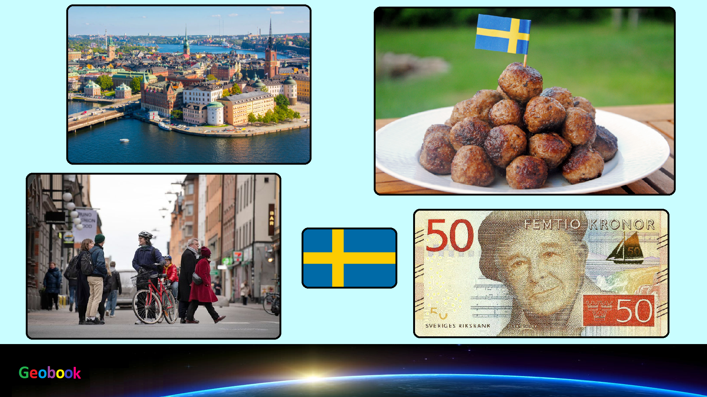

____
Происхождение названия
Название страны происходит от древнескандинавских слов svea и rige — «государство свеев».
История
После таяния ледников территории Скандинавского полуострова стали постепенно заселяться людьми, основным занятием которых были охота и собирательство.
В Швеции в начале века активно обсуждался вопрос о Шведско-Норвежской унии.
Внешняя политика во многом определялась двумя аспектами международных отношений того времени: во-первых, это были предвоенные годы, и великие державы уже достаточно долго готовились к Первой мировой войне.
После войны на выборах во вторую палату Риксдага либералы и социал-демократы получили вместе большинство, лидеры двух партий Нильс Эден и Яльмар Брантинг объединились, чтобы сформировать правительство.
Выборы 1932 года принесли победу социал-демократам и Крестьянскому союзу.
В начале Второй мировой войны был официально объявлен нейтралитет.
Период «красно-зелёной» коалиции (1951—1957),
в этот период проводилась жёсткая экономическая политика, в связи с ростом цен и инфляцией.
Тенденция равномерного экономического роста, которая была характерна для развития шведской экономики после Корейской войны, сохранялась на протяжении всех 1960-х годов и в начале 1970-х.
Правительство и политика
На данный момент действующий король страны — Карл XVI Густав (с 15 сентября 1973 года).
Данные: Дата рождения 30 апреля 1946. Место рождения Сольна, Стокгольм. Супруга Сильвия Рената Зоммерлат. Дети кронпринцесса Виктория,
принц Карл Филипп,
принцесса Мадлен.
На данный момент действующий премьер-министр страны - Лёвен, Стефан (с 3 октября 2014).
Данные: Дата рождения 21 июля 1957. Место рождения Hägerstens församling, Швеция. Супруга Улла Лёвен (с 2003).
Праздники
| Дата | Праздник | Примечание |
|---|
| 1 января | Новый год | Начало календарного года |
| 13 января | День святого Кнута | День святого Кнута |
| 6 февраля | День саамского народа | День саамского народа |
| 30 апреля | Вальпургиева ночь | Вальпургиева ночь |
| 6 июня | Национальный День Швеции | Национальный День Швеции |
| 23 июня | Праздник середины лета | Праздник середины лета |
| 11 ноября | День святого Мартина | День святого Мартина |
| 10 декабря | Нобелевский день | Нобелевский день |
| 25 декабря | Рождество | Празднование Рождества |
____
